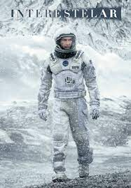
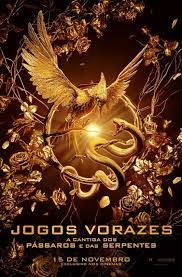
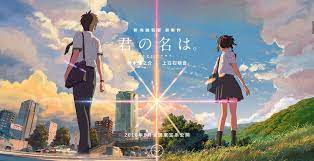

Uma bruxa lança uma terrível maldição sobre a jovem Sophie transformando-a em uma velha. Desesperada, ela embarca em uma odisseia em busca do mago Howl, um misterioso feiticeiro que pode ajudá-la a reverter o feitiço.
Data de lançamento: 15 de julho de 2005 (Brasil).

Interestelar
92% gostaram desse filme.
As reservas naturais da Terra estão chegando ao fim e um grupo de astronautas recebe a missão de verificar possíveis planetas para receberem a população mundial, possibilitando a continuação da espécie. Cooper é chamado para liderar o grupo e aceita a missão sabendo que pode nunca mais ver os filhos. Ao lado de Brand, Jenkins e Doyle, ele seguirá em busca de um novo lar.
Data de lançamento: 6 de novembro de 2014 (Brasil).

Jogos Vorazes
The Hunger Games, é uma série de filmes americana baseada nos livros homônimos da autora americana Suzanne Collins. A série é distribuída pela Lionsgate e consiste em cinco filmes, iniciando com Jogos Vorazes e finalizando com Jogos Vorazes: A Cantiga dos Pássaros e das Serpentes.

Your Name
96% gostaram desse filme.
Mitsuha é a filha do prefeito de uma pequena cidade, mas sonha em tentar a sorte em Tóquio. Taki trabalha em um restaurante em Tóquio e deseja largar o seu emprego. Os dois não se conhecem, mas estão conectados pelas imagens de seus sonhos.
Data de lançamento: 11 de outubro de 2017 (Brasil).
Studio Ghibli
Em geral, filmes feitos pelo Studio Ghibli, são minha paixão.
Exemplos: